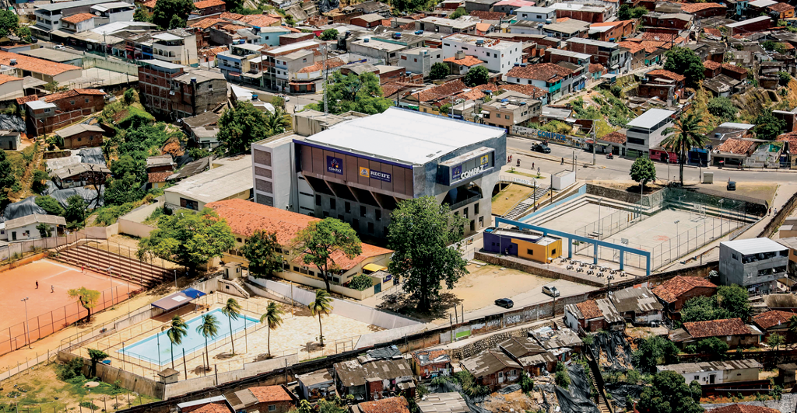
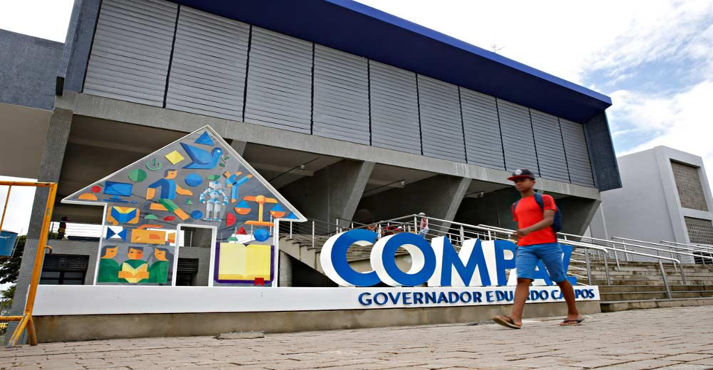
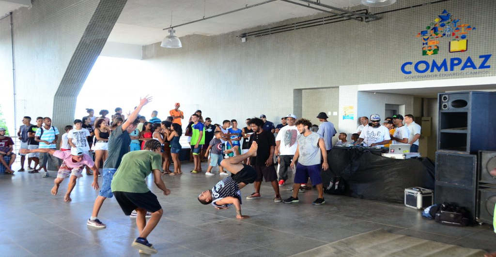
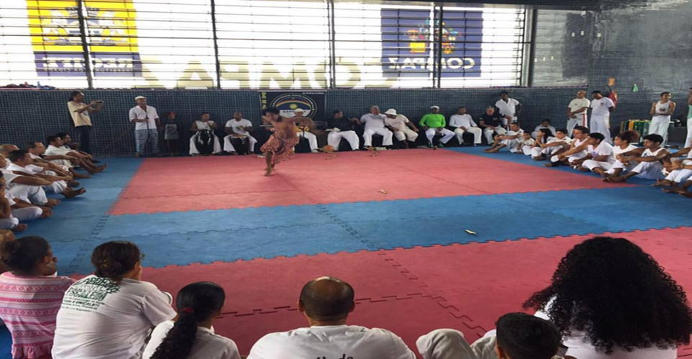
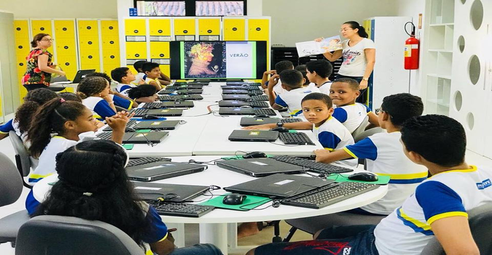
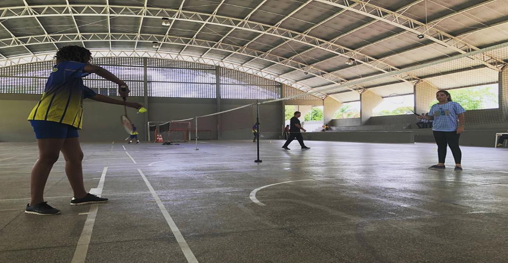

O Centro Comunitário da Paz Governador Eduardo Campos fica localizado numa área estratégica do Recife no Alto Santa Terezinha na Zona Norte do Recife, o Compaz do Alto Santa Terezinha contempla cerca de 18 bairros da cidade: Arruda, Campina do Barreto, Campo Grande, Encruzilhada, Hipódromo, Peixinhos, Ponto de Parada, Rosarinho, Torreão, Água Fria, Alta Santa Terezinha, Bomba do Hemetério, Cajueiro, Fundão, Porto da Madeira, Beberibe, Dois Unidos e Linha do Tiro. Com uma área construída de 13.100 metros quadrados, o equipamento possui diversos serviços para atender mais de 220 mil pessoas que moram na Zona Norte da cidade (RPA2). O Compaz Eduardo Campos funciona de terça a domingo, sendo de terça a sexta, das 9h às 18h, e aos sábados e domingos, das 9h às 13h. Às segundas ele é fechado para limpeza e manutenção. O espaço de cidadania e promoção de Cultura de Paz oferece cerca de quatro mil vagas para atividades esportivas e de cidadania, que chegam até 40 mil atendimentos por mês. Oito escolas da zona norte, em um raio de 500 metros, são beneficiadas com o novo equipamento. Os alunos e a comunidade poderão usufuir da estrutura com Biblioteca, Dojô, atividades esportivas e culturais, Procon, mediação de conflitos, atendimento especializado às mulheres vítimas de violência, sala do empreendedor, atividades, oficinas cidadãs, aulas de Inglês, Espanhol e reforço escolar (Português e Matemática) e práticas Integrativas (Tai chi chuan, ioga, biodança, meditação) estão entre as atividades oferecidas. A biblioteca Afrânio Godoy, com seus 850m², é a maior já construída pela Prefeitura do Recife e faz parte da Rede de Bibliotecas pela Paz. Esse projeto traz uma nova dinâmica de conhecimento e cidadania para a cidade. A ideia é aproximar os jovens que perderam interesse por esses espaços, por meio de atividades lúdicas nas comunidades nas quais pertencem. No último andar do Compaz está instalado o Dojô, espaço para treino e competições de artes marciais, com 225 m². São sete modalidades oferecidas. Jiu jitsu, Judô, Capoeira, Luta Olímpica, Taekwondo, Submission e Aikido. As aulas são ministradas por sete instrutores, todos moradores da localidade, que possuem mais de dez anos de experiência. Entre os parceiros do Compaz estão a Fundação Bernard Van Leer, Fundação Itaú, Grupo Parvi, Instituto Cervantes, British Council, Livraria Cultura, Secretaria de Educação de Pernambuco, Sesc, Fundação Gilberto Freyre, Conservatório Pernambucano de Música, Universidade Católica de Pernambuco (Unicap) e diversas secretarias municipais.